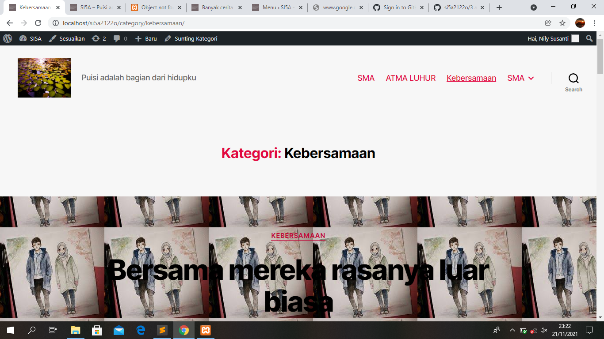

1. Jalankan xammp kontrol panel seperti biasa
2. Buka browser localhost
3. login wp-admin
4. tentang page/ halaman tetapi berbeda penggunaanya karena bersifat tetap atau jarang sekali di update, contoh visi misi, struktur organisasi
5. berbeda dengan post yang sifatnya terbaru
6. kemudian buat pos baru contoh "kencan bersama AM di negeri sakura"
7. kemudian ganti kategori "kebersamaan"
8. kemudian klik pos tambah baru, isikan konten lagi
9.intinya jikalau ada postingan terbaru maka posingan lama akan tertimpa postingan terbaru
10. untuk menggunakan page / laman setelah itu tambah
11. Langkah selanjutnya akses pilihan menu pada tampilan
12. setelah itu pilih yang menu utama (horizontal)
13. centang yang bagian kategori agar tampilannya muncul pada bagian depan website
14.Untuk menjadikan laman di bagian depan centang konten pada settingan tadi 
15. untuk menambah taut tersuai seperti link instagram dll
16. tentang widget ada beberapa kategori pada blok widget
17. download file yang widget dari telegram
18. klik menu dan unggah plugin dan klik install sekarang dan aktifkan
19. drug yang ingin dipilih ke footer 2 misalnya untuk menunjukkan jumlah pos
20.kemudian klik menu tampilan > tema > tambah bru install dan aktifkan
21.cari tema yang diinginkan kemudian import demo
22. kemudian klik kanan live preview ke new tab
23. widgert memang ditentukan oleh tema yang diaktifkan